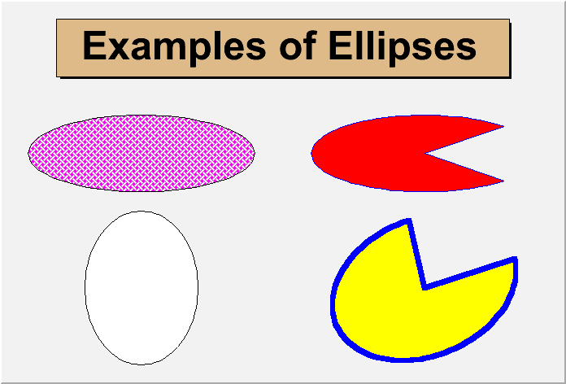
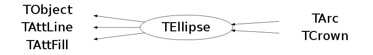

class TEllipse: public TObject, public TAttLine, public TAttFill
TEllipse : to draw ellipses
When an ellipse sector only is drawn, the lines connecting the center of the ellipse to the edges are drawn by default. One can specify the drawing option "only" to not draw these lines or alternatively call the function SetNoEdges(). To remove completely the ellipse outline it is enough to specify 0 as line style.
{kind=link}

//Draw ellipses //Author: Rene Brun { c1 = new TCanvas("c1"); c1->Range(0,0,1,1); TPaveLabel pel(0.1,0.8,0.9,0.95,"Examples of Ellipses"); pel.SetFillColor(42); pel.Draw(); TEllipse el1(0.25,0.25,.1,.2); el1.Draw(); TEllipse el2(0.25,0.6,.2,.1); el2.SetFillColor(6); el2.SetFillStyle(3008); el2.Draw(); TEllipse el3(0.75,0.6,.2,.1,45,315); el3.SetFillColor(2); el3.SetFillStyle(1001); el3.SetLineColor(4); el3.Draw(); TEllipse el4(0.75,0.25,.2,.15,45,315,62); el4.SetFillColor(5); el4.SetFillStyle(1001); el4.SetLineColor(4); el4.SetLineWidth(6); el4.Draw(); return c1; }
Function Members (Methods)
public:
| TEllipse() | |
| TEllipse(const TEllipse& ellipse) | |
| TEllipse(Double_t x1, Double_t y1, Double_t r1, Double_t r2 = 0, Double_t phimin = 0, Double_t phimax = 360, Double_t theta = 0) | |
| virtual | ~TEllipse() |
| void | TObject::AbstractMethod(const char* method) const |
| virtual void | TObject::AppendPad(Option_t* option = "") |
| virtual void | TObject::Browse(TBrowser* b) |
| static TClass* | Class() |
| virtual const char* | TObject::ClassName() const |
| virtual void | TObject::Clear(Option_t* = "") |
| virtual TObject* | TObject::Clone(const char* newname = "") const |
| virtual Int_t | TObject::Compare(const TObject* obj) const |
| virtual void | Copy(TObject& ellipse) const |
| virtual void | TObject::Delete(Option_t* option = "")MENU |
| Int_t | TAttLine::DistancetoLine(Int_t px, Int_t py, Double_t xp1, Double_t yp1, Double_t xp2, Double_t yp2) |
| virtual Int_t | DistancetoPrimitive(Int_t px, Int_t py) |
| virtual void | Draw(Option_t* option = "") |
| virtual void | TObject::DrawClass() constMENU |
| virtual TObject* | TObject::DrawClone(Option_t* option = "") constMENU |
| virtual void | DrawEllipse(Double_t x1, Double_t y1, Double_t r1, Double_t r2, Double_t phimin, Double_t phimax, Double_t theta, Option_t* option = "") |
| virtual void | TObject::Dump() constMENU |
| virtual void | TObject::Error(const char* method, const char* msgfmt) const |
| virtual void | TObject::Execute(const char* method, const char* params, Int_t* error = 0) |
| virtual void | TObject::Execute(TMethod* method, TObjArray* params, Int_t* error = 0) |
| virtual void | ExecuteEvent(Int_t event, Int_t px, Int_t py) |
| virtual void | TObject::Fatal(const char* method, const char* msgfmt) const |
| virtual TObject* | TObject::FindObject(const char* name) const |
| virtual TObject* | TObject::FindObject(const TObject* obj) const |
| virtual Option_t* | TObject::GetDrawOption() const |
| static Long_t | TObject::GetDtorOnly() |
| virtual Color_t | TAttFill::GetFillColor() const |
| virtual Style_t | TAttFill::GetFillStyle() const |
| virtual const char* | TObject::GetIconName() const |
| virtual Color_t | TAttLine::GetLineColor() const |
| virtual Style_t | TAttLine::GetLineStyle() const |
| virtual Width_t | TAttLine::GetLineWidth() const |
| virtual const char* | TObject::GetName() const |
| Bool_t | GetNoEdges() const |
| virtual char* | TObject::GetObjectInfo(Int_t px, Int_t py) const |
| static Bool_t | TObject::GetObjectStat() |
| virtual Option_t* | TObject::GetOption() const |
| Double_t | GetPhimax() const |
| Double_t | GetPhimin() const |
| Double_t | GetR1() const |
| Double_t | GetR2() const |
| Double_t | GetTheta() const |
| virtual const char* | TObject::GetTitle() const |
| virtual UInt_t | TObject::GetUniqueID() const |
| Double_t | GetX1() const |
| Double_t | GetY1() const |
| virtual Bool_t | TObject::HandleTimer(TTimer* timer) |
| virtual ULong_t | TObject::Hash() const |
| virtual void | TObject::Info(const char* method, const char* msgfmt) const |
| virtual Bool_t | TObject::InheritsFrom(const char* classname) const |
| virtual Bool_t | TObject::InheritsFrom(const TClass* cl) const |
| virtual void | TObject::Inspect() constMENU |
| void | TObject::InvertBit(UInt_t f) |
| virtual TClass* | IsA() const |
| virtual Bool_t | TObject::IsEqual(const TObject* obj) const |
| virtual Bool_t | TObject::IsFolder() const |
| Bool_t | TObject::IsOnHeap() const |
| virtual Bool_t | TObject::IsSortable() const |
| virtual Bool_t | TAttFill::IsTransparent() const |
| Bool_t | TObject::IsZombie() const |
| virtual void | ls(Option_t* option = "") const |
| void | TObject::MayNotUse(const char* method) const |
| virtual void | TAttLine::Modify() |
| virtual Bool_t | TObject::Notify() |
| void | TObject::Obsolete(const char* method, const char* asOfVers, const char* removedFromVers) const |
| static void | TObject::operator delete(void* ptr) |
| static void | TObject::operator delete(void* ptr, void* vp) |
| static void | TObject::operator delete[](void* ptr) |
| static void | TObject::operator delete[](void* ptr, void* vp) |
| void* | TObject::operator new(size_t sz) |
| void* | TObject::operator new(size_t sz, void* vp) |
| void* | TObject::operator new[](size_t sz) |
| void* | TObject::operator new[](size_t sz, void* vp) |
| TEllipse& | operator=(const TEllipse&) |
| virtual void | Paint(Option_t* option = "") |
| virtual void | PaintEllipse(Double_t x1, Double_t y1, Double_t r1, Double_t r2, Double_t phimin, Double_t phimax, Double_t theta, Option_t* option = "") |
| virtual void | TObject::Pop() |
| virtual void | Print(Option_t* option = "") const |
| virtual Int_t | TObject::Read(const char* name) |
| virtual void | TObject::RecursiveRemove(TObject* obj) |
| virtual void | TAttFill::ResetAttFill(Option_t* option = "") |
| virtual void | TAttLine::ResetAttLine(Option_t* option = "") |
| void | TObject::ResetBit(UInt_t f) |
| virtual void | TObject::SaveAs(const char* filename = "", Option_t* option = "") constMENU |
| virtual void | TAttFill::SaveFillAttributes(ostream& out, const char* name, Int_t coldef = 1, Int_t stydef = 1001) |
| virtual void | TAttLine::SaveLineAttributes(ostream& out, const char* name, Int_t coldef = 1, Int_t stydef = 1, Int_t widdef = 1) |
| virtual void | SavePrimitive(ostream& out, Option_t* option = "") |
| void | TObject::SetBit(UInt_t f) |
| void | TObject::SetBit(UInt_t f, Bool_t set) |
| virtual void | TObject::SetDrawOption(Option_t* option = "")MENU |
| static void | TObject::SetDtorOnly(void* obj) |
| virtual void | TAttFill::SetFillAttributes()MENU |
| virtual void | TAttFill::SetFillColor(Color_t fcolor) |
| virtual void | TAttFill::SetFillStyle(Style_t fstyle) |
| virtual void | TAttLine::SetLineAttributes()MENU |
| virtual void | TAttLine::SetLineColor(Color_t lcolor) |
| virtual void | TAttLine::SetLineStyle(Style_t lstyle) |
| virtual void | TAttLine::SetLineWidth(Width_t lwidth) |
| virtual void | SetNoEdges(Bool_t noEdges = kTRUE)TOGGLE GETTER |
| static void | TObject::SetObjectStat(Bool_t stat) |
| virtual void | SetPhimax(Double_t phi = 360)MENU |
| virtual void | SetPhimin(Double_t phi = 0)MENU |
| virtual void | SetR1(Double_t r1)MENU |
| virtual void | SetR2(Double_t r2)MENU |
| virtual void | SetTheta(Double_t theta = 0)MENU |
| virtual void | TObject::SetUniqueID(UInt_t uid) |
| virtual void | SetX1(Double_t x1)MENU |
| virtual void | SetY1(Double_t y1)MENU |
| virtual void | ShowMembers(TMemberInspector& insp) |
| virtual void | Streamer(TBuffer& b) |
| void | StreamerNVirtual(TBuffer& b) |
| virtual void | TObject::SysError(const char* method, const char* msgfmt) const |
| Bool_t | TObject::TestBit(UInt_t f) const |
| Int_t | TObject::TestBits(UInt_t f) const |
| virtual void | TObject::UseCurrentStyle() |
| virtual void | TObject::Warning(const char* method, const char* msgfmt) const |
| virtual Int_t | TObject::Write(const char* name = 0, Int_t option = 0, Int_t bufsize = 0) |
| virtual Int_t | TObject::Write(const char* name = 0, Int_t option = 0, Int_t bufsize = 0) const |
protected:
| virtual void | TObject::DoError(int level, const char* location, const char* fmt, va_list va) const |
| void | TObject::MakeZombie() |
Data Members
public:
| enum { | kNoEdges | |
| }; | ||
| enum TObject::EStatusBits { | kCanDelete | |
| kMustCleanup | ||
| kObjInCanvas | ||
| kIsReferenced | ||
| kHasUUID | ||
| kCannotPick | ||
| kNoContextMenu | ||
| kInvalidObject | ||
| }; | ||
| enum TObject::[unnamed] { | kIsOnHeap | |
| kNotDeleted | ||
| kZombie | ||
| kBitMask | ||
| kSingleKey | ||
| kOverwrite | ||
| kWriteDelete | ||
| }; |
protected:
| Color_t | TAttFill::fFillColor | fill area color |
| Style_t | TAttFill::fFillStyle | fill area style |
| Color_t | TAttLine::fLineColor | line color |
| Style_t | TAttLine::fLineStyle | line style |
| Width_t | TAttLine::fLineWidth | line width |
| Double_t | fPhimax | Maximum angle (degrees) |
| Double_t | fPhimin | Minimum angle (degrees) |
| Double_t | fR1 | first radius |
| Double_t | fR2 | second radius |
| Double_t | fTheta | Rotation angle (degrees) |
| Double_t | fX1 | X coordinate of centre |
| Double_t | fY1 | Y coordinate of centre |
Class Charts
{kind=link}
{kind=link}
{kind=link}
{kind=link}

Function documentation
TEllipse(Double_t x1, Double_t y1, Double_t r1, Double_t r2 = 0, Double_t phimin = 0, Double_t phimax = 360, Double_t theta = 0)
Ellipse normal constructor.
Int_t DistancetoPrimitive(Int_t px, Int_t py)
Compute distance from point px,py to an ellipse. Compute the closest distance of approach from point px,py to this ellipse. The distance is computed in pixels units. In case of a filled ellipse the distance returned is 0 if the point (px,py) is inside the ellipse, and is huge if the point is outside.
void DrawEllipse(Double_t x1, Double_t y1, Double_t r1, Double_t r2, Double_t phimin, Double_t phimax, Double_t theta, Option_t* option = "")
Draw this ellipse with new coordinates.
void ExecuteEvent(Int_t event, Int_t px, Int_t py)
Execute action corresponding to one event. This member function is called when a line is clicked with the locator If Left button clicked on one of the line end points, this point follows the cursor until button is released. if Middle button clicked, the line is moved parallel to itself until the button is released. NOTE that support for log scale is not implemented
void PaintEllipse(Double_t x1, Double_t y1, Double_t r1, Double_t r2, Double_t phimin, Double_t phimax, Double_t theta, Option_t* option = "")
Draw this ellipse with new coordinates.
void SavePrimitive(ostream& out, Option_t* option = "")
Save primitive as a C++ statement(s) on output stream out
void SetNoEdges(Bool_t noEdges = kTRUE)
if noEdges = kTRUE the lines connecting the center to the edges will not be drawn. default is to draw the edges.